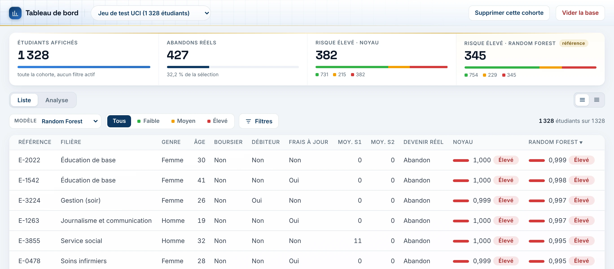

Spot dropout before it happens.
Dropping out mid-course is costly for students and institutions alike. The goal: estimate a reliable dropout probability from the end of the first semester, then put it in the hands of advisors.

Four steps, one shared protocol.
- 01
Preparation
Cleaning, encoding, stratified 70/30 split, SMOTE rebalancing on the training set only.
- 02
Kernel model
Nadaraya-Watson with a Gaussian kernel, bandwidth tuned by validation (k = 75).
- 03
Machine Learning
Logistic regression, Random Forest and XGBoost evaluated under the same protocol.
- 04
Deployment
An early-alert web application, deployed online.
A forty-second demo.
Sign-in, dashboard, Analysis tab, student record and individual entry.
Random Forest comes out on top.
AUC of the four models
Measured on the 1,328 test-set students, never seen during training.
| MODEL | ACCURACY | F1 | AUC |
|---|---|---|---|
| Random Forest | 88.6% | 0.816 | 0.934 |
| Logistic regression | 87.4% | 0.813 | 0.931 |
| XGBoost | 88.3% | 0.811 | 0.930 |
| Nadaraya-Watson | 83.6% | 0.747 | 0.875 |
Random Forest is the model used in the app.
The three Machine Learning models are neck and neck. The kernel approach holds up but is significantly lower: a bootstrap with 1,000 resamples confirms the gap.
Early Alert, online.
The app estimates the dropout risk of one student or of a whole cohort imported as CSV, and explains each score through its main factors with SHAP.